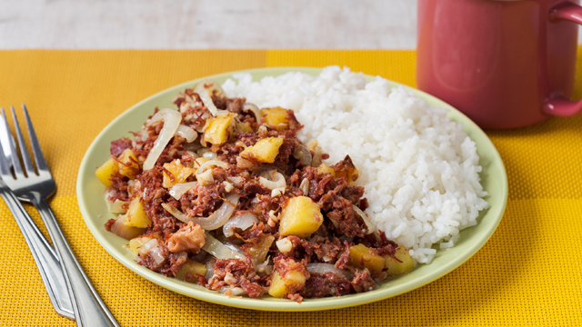

Corned Beef Silog

Description
A classic filipino breakfast dish. Best enjoyed with white rice and a fried egg!
Ingredients
- 5~ tbsp oil
- 2 medium potatoes, cubed
- 1 garlic head, minced
- 1 (370 ml) can of corned beef
- 1 large onion, cut
- Salt
Steps
- Preheat 3 tbsp oil in a large frying pan on medium heat.
- Fry the potatoes, and set aside once cooked.
- Add the remaining oil to the pan, and saute your minced garlic until golden-brown.
- Add your corned beef to the pan, along with your cooked potatoes. Cook to a simmer.
- Add onions and stir. Continue cooking to taste, and salt if needed.
- Enjoy! Plate on top of a bed of white rice and add a fried egg if desired!